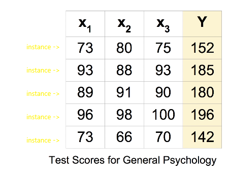

Recap
[복습] 배웠던 개념 및 공식을 생각해 보기!
-
Hypothesis :
-
Cost function :
-
Gradient descent algorithm :
기울기 :
learning rate :(Weight를 찾는 그래프에서 dot하나하나의 step 간극이 learning rate가 된다)
Predicting exam score : 기존에 얻은 3가지 점수로 final term 점수를 예상해보기
regerssion using three input ( x1, x2, x3 )
Hypothesis
Cost function
Multi-variable
위와 같이 변수가 너무 많아지면 복잡성의 문제 때문에 Matrix개념을 도입
Hypothesis using matrix
인스턴스(instance)란?

각 x1, x2, x3, ... ,xn의 값들이 하나의 instance가 될 수 있다.
Hypothesis using matrix
WX vs XW
- Lecture(theory)
- Implementation 응용(TensorFlow)
수학적으로는 같은 의미이다.